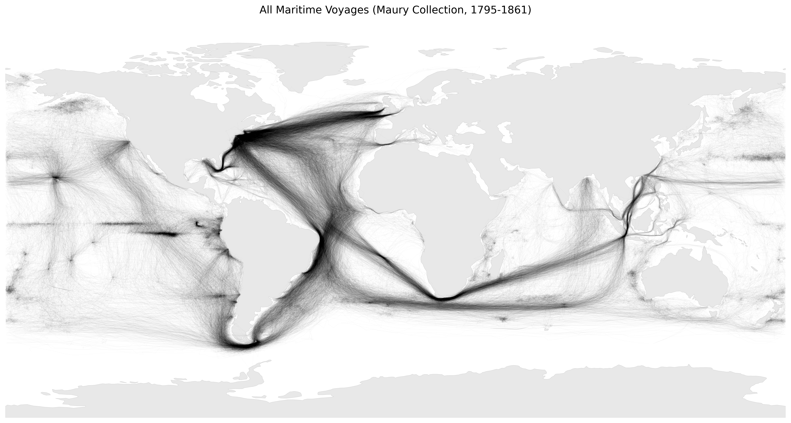
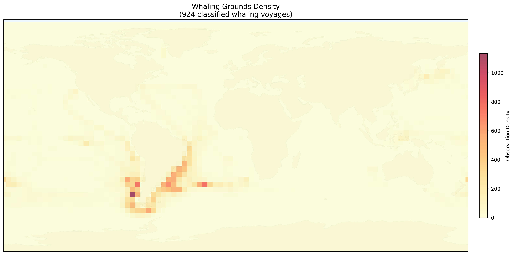
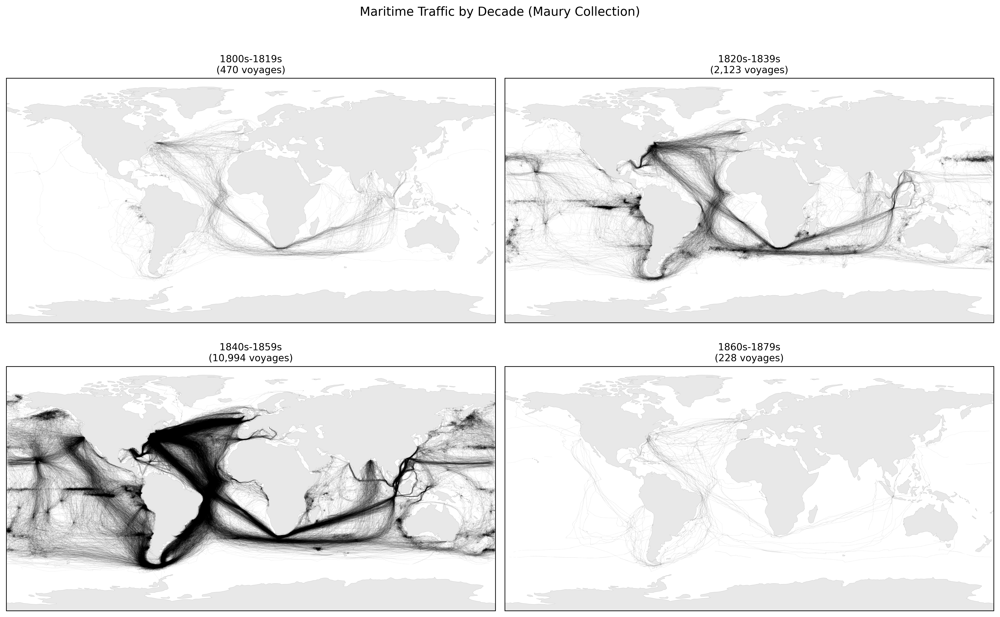

import numpy as np
import pandas as pd
import matplotlib.pyplot as plt
from pathlib import Path
# Load classified data
data_path = Path("../data/observations_classified.parquet")
if data_path.exists():
df = pd.read_parquet(data_path)
print(f"Loaded {len(df):,} observations from {df['voyage_id'].nunique():,} voyages")
print(f"Classifications: {df['classification'].value_counts().to_dict()}")
else:
print("Note: Run classify_voyages.py first to generate classified data")
df = NoneStep 5: Visualizing Voyages and Creating Animations
Visualizing Voyages and Creating Animations
Now that we have classified voyages, we can create the iconic “ghost ship” visualizations that Ben Schmidt pioneered. This notebook covers:
- Static “ghost ship” maps with semi-transparent tracks
- Performance optimization for rendering thousands of voyages
- Animated visualizations showing ships moving over time
- Video export for pausable/scrubbable playback
The Ghost Ship Aesthetic
The “ghost ship” visualization works by drawing thousands of voyage tracks with very low opacity (alpha ≈ 0.02-0.05). Where many ships traveled the same route, the overlapping lines create darker regions, revealing maritime highways.
Challenge: Rendering Performance
Plotting 13,000+ voyages individually is extremely slow. The naive approach:
# SLOW: O(n²) - don't do this!
for voyage_id in df['voyage_id'].unique():
voyage = df[df['voyage_id'] == voyage_id] # Full scan for each voyage!
ax.plot(voyage['LON'], voyage['LAT'], alpha=0.02)This has two problems:
- O(n²) filtering: Each
df[df['voyage_id'] == vid]scans the entire DataFrame - Individual plot calls: Each
ax.plot()has overhead; thousands add up
Solution 1: Use groupby() Instead of Repeated Filtering
def demonstrate_groupby_speedup():
"""Show the performance difference between filtering and groupby."""
if df is None:
return
import time
# Sample 100 voyages for timing comparison
sample_ids = df['voyage_id'].unique()[:100]
sample_df = df[df['voyage_id'].isin(sample_ids)]
# Method 1: Repeated filtering (slow)
start = time.time()
for vid in sample_ids:
voyage = sample_df[sample_df['voyage_id'] == vid]
_ = len(voyage)
filter_time = time.time() - start
# Method 2: Sort + groupby (fast)
start = time.time()
sorted_df = sample_df.sort_values(['voyage_id', 'YR', 'MO', 'DY'])
for vid, voyage in sorted_df.groupby('voyage_id', sort=False):
_ = len(voyage)
groupby_time = time.time() - start
print(f"Filtering 100 voyages: {filter_time:.3f}s")
print(f"Groupby 100 voyages: {groupby_time:.3f}s")
print(f"Speedup: {filter_time/groupby_time:.1f}x faster")
demonstrate_groupby_speedup()Solution 2: Use LineCollection for Batch Rendering
Instead of calling ax.plot() thousands of times, collect all line segments and render them in a single LineCollection:
from matplotlib.collections import LineCollection
def create_line_segments(voyage_df):
"""
Convert voyage DataFrame to line segments for LineCollection.
Handles date line crossings by breaking tracks at longitude jumps > 180°.
"""
segments = []
lons = voyage_df['LON'].values
lats = voyage_df['LAT'].values
seg_start = 0
for j in range(1, len(lons)):
# Break at date line crossings
if abs(lons[j] - lons[j-1]) > 180:
if j > seg_start + 1:
points = np.column_stack([lons[seg_start:j], lats[seg_start:j]])
for k in range(len(points) - 1):
segments.append([points[k], points[k + 1]])
seg_start = j
# Final segment
if len(lons) > seg_start + 1:
points = np.column_stack([lons[seg_start:], lats[seg_start:]])
for k in range(len(points) - 1):
segments.append([points[k], points[k + 1]])
return segments
# Demonstrate with a single voyage
if df is not None:
sample_voyage = df[df['voyage_id'] == df['voyage_id'].iloc[0]].sort_values(['YR', 'MO', 'DY'])
segs = create_line_segments(sample_voyage)
print(f"Voyage with {len(sample_voyage)} points → {len(segs)} line segments")Creating a Ghost Ship Map
Here’s the optimized approach combining both techniques:
def create_ghost_ship_map(df, ax, color='black', alpha=0.03, linewidth=0.4):
"""
Plot all voyage tracks efficiently using LineCollection.
Parameters:
df: DataFrame with voyage_id, LON, LAT columns
ax: matplotlib Axes
color: Line color
alpha: Transparency (lower = more ghostly)
linewidth: Line width
"""
# Sort once, then iterate with groupby
df_sorted = df.sort_values(['voyage_id', 'YR', 'MO', 'DY'])
all_segments = []
for vid, voyage in df_sorted.groupby('voyage_id', sort=False):
if len(voyage) < 2:
continue
all_segments.extend(create_line_segments(voyage))
# Render all segments in one call
if all_segments:
lc = LineCollection(all_segments, colors=color, alpha=alpha,
linewidths=linewidth, capstyle='round')
ax.add_collection(lc)
return len(all_segments)
# Create the visualization
if df is not None:
fig, ax = plt.subplots(figsize=(14, 7))
ax.set_facecolor('white')
ax.set_xlim(-180, 180)
ax.set_ylim(-90, 90)
n_segments = create_ghost_ship_map(df, ax, alpha=0.02)
ax.set_title(f'Maritime Voyages: Maury Collection\n({df["voyage_id"].nunique():,} voyages, {n_segments:,} segments)')
ax.axis('off')
plt.tight_layout()
plt.show()Comparing Whaling vs. Merchant Routes
The classification allows us to visualize the distinct spatial patterns:
if df is not None and 'classification' in df.columns:
fig, axes = plt.subplots(1, 2, figsize=(14, 5))
for ax, (class_name, color) in zip(axes, [('whaling', '#2171b5'), ('merchant', '#d94801')]):
ax.set_facecolor('#fafafa')
ax.set_xlim(-180, 180)
ax.set_ylim(-90, 90)
df_class = df[df['classification'] == class_name]
n_voyages = df_class['voyage_id'].nunique()
n_segs = create_ghost_ship_map(df_class, ax, color=color, alpha=0.08, linewidth=0.5)
ax.set_title(f'{class_name.title()} Voyages\n({n_voyages:,} voyages)')
ax.axis('off')
plt.tight_layout()
plt.show()Creating Animations
For animations, we need to show ships at each point in time. The key insight is to pre-compute voyage data once, then render frames efficiently.
def precompute_voyage_data(df):
"""
Pre-compute voyage segments with date information for animation.
Returns dict mapping voyage_id to:
- segments: list of {lons, lats, dates} dicts
- min_date, max_date: voyage date range
"""
df = df.copy()
df['_date'] = pd.to_datetime(
df['YR'].astype(str) + '-' +
df['MO'].astype(str).str.zfill(2) + '-' +
df['DY'].astype(str).str.zfill(2),
errors='coerce'
)
df = df.dropna(subset=['_date'])
df_sorted = df.sort_values(['voyage_id', '_date'])
voyage_data = {}
for vid, voyage in df_sorted.groupby('voyage_id', sort=False):
if len(voyage) < 2:
continue
lons = voyage['LON'].values
lats = voyage['LAT'].values
dates = voyage['_date'].values
# Break at date line crossings
segments = []
seg_start = 0
for i in range(1, len(lons)):
if abs(lons[i] - lons[i-1]) > 180:
if i > seg_start:
segments.append({
'lons': lons[seg_start:i],
'lats': lats[seg_start:i],
'dates': dates[seg_start:i]
})
seg_start = i
if len(lons) > seg_start:
segments.append({
'lons': lons[seg_start:],
'lats': lats[seg_start:],
'dates': dates[seg_start:]
})
if segments:
voyage_data[vid] = {
'segments': segments,
'min_date': dates.min(),
'max_date': dates.max()
}
return voyage_data
# Pre-compute for whaling voyages
if df is not None:
df_whaling = df[df['classification'] == 'whaling']
voyage_data = precompute_voyage_data(df_whaling)
print(f"Pre-computed {len(voyage_data)} whaling voyages")Animation Frame Rendering
Each frame shows:
- Trail: Full voyage path up to current date (faded)
- Recent segment: Last 10 points (highlighted)
- Ship position: Current location (bright marker)
def render_frame_example(voyage_data, current_date, ax):
"""Render a single animation frame."""
current_np = np.datetime64(current_date)
trail_segments = []
recent_segments = []
ship_positions = []
for vid, data in voyage_data.items():
if data['min_date'] > current_np:
continue
for seg in data['segments']:
mask = seg['dates'] <= current_np
if mask.sum() >= 2:
seg_lons = seg['lons'][mask]
seg_lats = seg['lats'][mask]
# Collect trail segments
points = np.column_stack([seg_lons, seg_lats])
for k in range(len(points) - 1):
trail_segments.append([points[k], points[k + 1]])
# Collect recent segments
if len(seg_lons) > 3:
recent_pts = np.column_stack([seg_lons[-10:], seg_lats[-10:]])
for k in range(len(recent_pts) - 1):
recent_segments.append([recent_pts[k], recent_pts[k + 1]])
# Find current position
for seg in reversed(data['segments']):
seg_mask = seg['dates'] <= current_np
if seg_mask.sum() > 0:
ship_positions.append((seg['lons'][seg_mask][-1], seg['lats'][seg_mask][-1]))
break
# Batch render with LineCollection
if trail_segments:
lc = LineCollection(trail_segments, colors='#555577', alpha=0.4, linewidths=0.6)
ax.add_collection(lc)
if recent_segments:
lc = LineCollection(recent_segments, colors='#ff6b6b', alpha=0.8, linewidths=1.5)
ax.add_collection(lc)
if ship_positions:
lons, lats = zip(*ship_positions)
ax.scatter(lons, lats, c='#ffd93d', s=20, zorder=10, edgecolors='white', linewidth=0.3)
return len(ship_positions)
# Show a sample frame
if df is not None and len(voyage_data) > 0:
fig, ax = plt.subplots(figsize=(12, 6))
ax.set_facecolor('#1a1a2e')
ax.set_xlim(-180, 180)
ax.set_ylim(-90, 90)
# Pick a date in the middle of the data
sample_date = pd.Timestamp('1840-01-01')
n_ships = render_frame_example(voyage_data, sample_date, ax)
ax.set_title(f'Whaling Voyages: January 1840 ({n_ships} active ships)',
color='white', fontsize=12)
ax.axis('off')
fig.patch.set_facecolor('#1a1a2e')
plt.tight_layout()
plt.show()Generating the Full Animation
The animate_voyages.py script handles the full animation process:
- Pre-compute voyage data
- Generate date range for frames
- Render each frame to PIL Image
- Save as GIF and/or MP4
# Command to generate the animation
# uv run python scripts/animate_voyages.py --classification whaling --n-frames 100 -o output/whaling_voyages
# Key options:
# --classification whaling|merchant Filter by ship type
# --n-frames 100 Number of animation frames
# --fps 10 Frames per second
# --format gif|mp4|both Output format(s)
# --max-voyages 50 Limit voyages for previewVideo Output with ffmpeg
GIFs can’t be paused or scrubbed. For longer animations, MP4 is better:
import subprocess
from pathlib import Path
import tempfile
def save_as_mp4(frames, output_path, fps=10):
"""Convert PIL frames to MP4 using ffmpeg."""
with tempfile.TemporaryDirectory() as tmpdir:
# Save frames as numbered PNGs
for i, frame in enumerate(frames):
frame.save(Path(tmpdir) / f"frame_{i:04d}.png")
# Use ffmpeg to create MP4
# -vf scale ensures even dimensions (required for H.264)
subprocess.run([
'ffmpeg', '-y',
'-framerate', str(fps),
'-i', str(Path(tmpdir) / 'frame_%04d.png'),
'-vf', 'scale=trunc(iw/2)*2:trunc(ih/2)*2',
'-c:v', 'libx264',
'-pix_fmt', 'yuv420p',
'-crf', '23',
str(output_path)
])Performance Summary
| Optimization | Impact |
|---|---|
groupby() instead of filter loop |
~10-50x faster data iteration |
LineCollection instead of ax.plot() |
~5-10x faster rendering |
| Pre-compute voyage segments | Amortized across all frames |
| Even dimensions for ffmpeg | Enables H.264 encoding |
With these optimizations, rendering 100 frames of 800+ whaling voyages takes ~15 seconds.
Gallery
Here are the key visualizations produced by the pipeline:
Ghost Ships: All Voyages

Whaling Grounds Density

Traffic by Decade
